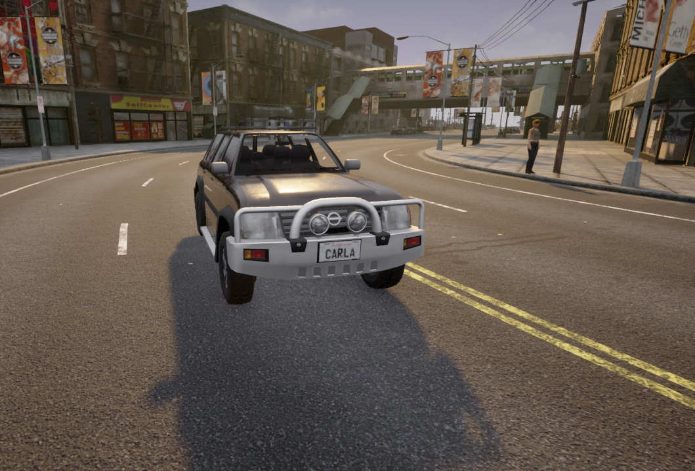

基础¶
本页介绍了 Carla 服务器和客户端如何通过 API 进行操作和通信所需的基本概念。Carla 使用服务器-客户端架构运行，其中 Carla 服务器运行模拟并由客户端向其发送指令。客户端代码使用 API 与服务器进行通信。要使用 Python API，您必须通过 pip 安装该模块：
pip install carla-simulator # Python 2
pip3 install carla-simulator # Python 3
还要确保在 python 脚本中导入 Carla 包：
import carla
世界和客户端 ¶
客户端 ¶
客户端 是用户运行以请求模拟中的信息或更改的模块。客户端使用 IP 和特定端口运行。它通过终端与服务器通信。可以有许多客户端同时运行。高级多客户端管理需要对 Carla 和 同步 有透彻的了解。
使用 Carla 客户端对象设置客户端：
client = carla.Client('localhost', 2000)
这会将客户端设置为与本地计算机上 localhost 运行的 Carla 服务器进行通信。或者，如果在单独的计算机上运行客户端，则可以使用网络计算机的 IP 地址。第二个参数是端口号。默认情况下，Carla 服务器将在端口 2000 上运行，如有必要，您可以在启动 Carla 时在设置中更改此设置。
客户端对象可用于多种功能，包括加载新地图、记录模拟和初始化交通管理器：
client.load_world('Town07')
client.start_recorder('recording.log')
世界 ¶
世界 是代表模拟的对象。它充当一个抽象层，包含生成参与者、改变天气、获取世界当前状态等的主要方法。每个模拟只有一个世界。当地图改变时，它会被销毁并替换为新的。
使用客户端对象检索世界对象：
world = client.get_world()
世界对象可用于使用其多种方法访问模拟中的对象，例如天气、车辆、交通灯、建筑物和地图：
level = world.get_map()
weather = world.get_weather()
blueprint_library = world.get_blueprint_library()
参与者和蓝图 ¶
参与者是在模拟中扮演参与者的任何东西。
- 车辆
- 行人
- 传感器
- 观察者
- 交通信号和交通灯
蓝图 是生成参与者所必需的已经制作好的参与者布局。基本上，是带有动画和一组属性的模型。其中一些属性可以由用户自定义，而另一些则不能。有一个蓝图库，其中包含所有可用的蓝图以及有关它们的信息。
地图和导航 ¶
地图 是代表模拟世界的对象，主要是城镇。有八张地图可供选择。它们都使用 opdrive 1.4 标准来描述道路。
道路、车道和路口 由 Python API 管理，以便从客户端访问。这些与 waypoint 类一起使用，为车辆提供导航路径。
交通标志 和 交通灯 是可访问的carla.Landmark。这些地标对象包含关于它们的 OpenDRIVE 定义的信息。此外，模拟器在运行时会自动生成停车标志、让行标志和交通信号灯对象，使用 OpenDRIVE 文件中的信息。这些对象会放置在道路上，有边界框包围。一旦车辆进入它们的边界框，它们就会意识到这些对象。
传感器和数据 ¶
传感器 等待一些事件发生，然后从模拟中收集数据。它们调用定义如何管理数据的函数。根据不同的情况，传感器会检索不同类型的传感器数据。
传感器是附着在父车辆上的参与者。它跟随车辆，收集周围环境的信息。可用的传感器由Blueprint库中的蓝图定义。
- 相机（RGB，深度和语义分割）
- 碰撞检测器
- 全球导航卫星系统传感器
- 惯性测量单元传感器
- 激光雷达射线投射
- 压线检测器
- 障碍检测器
- 雷达
- 责任敏感安全
同步模式和异步模式 ¶
Carla 具有客户端-服务器架构。服务器运行模拟。客户端检索信息并请求模拟中的更改。本节涉及客户端和服务器之间的通信。
默认情况下，Carla 以 异步模式 运行。
本质上，在 异步模式 下，Carla 服务器会尽可能快地运行。客户请求是即时处理的。在 同步模式 下，运行 Python 代码的客户端负责控制并告诉服务器何时更新。
如果您正在实验或设置模拟，异步模式 是运行 Carla 的合适模式，因此您可以在放置参与者时与观察者一起在地图上飞行。当您想要开始生成训练数据或在模拟中部署代理时，建议您使用 同步模式 ，因为这将为您提供更多的控制力和可预测性。
阅读有关 同步模式和异步模式 的更多信息。
!!! 笔记 在多客户端架构中，只有一个客户端应该发出节拍。服务器对收到的每个节拍做出响应，就好像它来自同一客户端一样。许多客户端的节拍将使服务器和客户端之间产生不一致。
设置同步模式 ¶
同步模式和异步模式之间的更改只是布尔状态的问题。
settings = world.get_settings()
settings.synchronous_mode = True # 启用同步模式
settings.fixed_delta_seconds = 0.05
world.apply_settings(settings)
要禁用同步模式，只需将变量设置为 False 或使用脚本PythonAPI/util/config.py。
cd PythonAPI/util && python3 config.py --no-sync # 禁用同步模式
使用同步模式 ¶
同步模式与缓慢的客户端应用程序以及需要不同元素（例如传感器）之间的同步时特别相关。如果客户端太慢而服务器没有等待，就会出现信息溢出。客户将无法管理一切，并且会丢失或混合。同样，对于许多传感器和异步情况，不可能知道所有传感器是否都在模拟中使用同一时刻的数据。
以下代码片段扩展了前一个代码片段。客户端创建一个摄像头传感器，将当前步骤的图像数据存储在队列中，并从队列中检索后发送节拍给服务器。可以在 此处 找到有关多个传感器的更复杂的示例。
settings = world.get_settings()
settings.synchronous_mode = True
world.apply_settings(settings)
camera = world.spawn_actor(blueprint, transform)
image_queue = queue.Queue()
camera.listen(image_queue.put)
while True:
world.tick()
image = image_queue.get()
!!! 重要 来自基于 GPU 传感器（主要是摄像头）的数据通常会延迟几帧生成。同步在这里至关重要。
世界上有异步方法可以让客户端等待服务器节拍，或者在收到服务器节拍时执行某些操作。
# 等待下一个节拍并获取节拍的快照
world_snapshot = world.wait_for_tick()
# 注册一个回调，以便在每次收到新的快照时都被调用。
world.on_tick(lambda world_snapshot: do_something(world_snapshot))
记录器 ¶
记录器可以将重现先前模拟所需的所有数据保存到文件中。这些数据包括车辆的位置和速度、交通信号灯的状态、行人的位置和速度以及太阳的位置和天气状况等详细信息。数据被记录到一个二进制文件中，Carla 服务器稍后可以加载该文件以准确地再现模拟。
参与者根据记录文件中包含的数据在每一帧上进行更新。当前模拟中出现在记录中的参与者将被移动或重新生成以模拟它。那些没有出现在记录中的人会继续他们的路，就像什么都没发生一样。
!!! 重要 播放结束时，车辆将设置为自动驾驶，但 行人不会停下来 。
记录器文件包括有关许多不同元素的信息。
- 参与者 — 创造和销毁、边界和触发盒。
- 交通等 — 状态变化和时间设置。
- 车辆 — 位置和方向、线速度和角速度、光状态和物理控制。
- 行人 — 位置和方向，以及线速度和角速度。
- 灯光 — 建筑物、街道和车辆的灯光状态。
记录 ¶
要开始记录，只需要一个文件名。在文件名中使用\,/或:字符会将其定义为绝对路径。如果没有详细路径，文件将保存在CarlaUE4/Saved。
client.start_recorder("/home/carla/recording01.log")
默认情况下，记录器设置为仅存储回放模拟所需的信息。为了保存前面提到的所有信息，additional_data必须在开始记录时配置参数。
client.start_recorder("/home/carla/recording01.log", True)
!!! 笔记 其他数据包括：车辆和行人的线速度和角速度、交通灯时间设置、执行时间、参与者的触发器和边界框以及车辆的物理控制。
要停止记录，调用也很简单。
client.stop_recorder()
!!! 笔记 据估计，50 个交通灯和 100 辆车的 1 小时记录大约需要 200MB 大小。
模拟回放 ¶
可以在模拟过程中的任何时刻开始播放。除了日志文件的路径之外，此方法还需要一些参数。
client.replay_file("recording01.log", start, duration, camera)
| 参数 | 描述 | 笔记 |
|---|---|---|
start |
记录开始模拟的时间（以秒为单位）。 | 如果为正，时间将从记录开始算起。 如果为负，则从最后考虑。 |
duration |
播放秒数。0 为全部记录。 | 播放结束时，车辆将设置为自动驾驶，行人将停止。 |
camera |
相机将聚焦的参与者的 ID。 | 将其设置0是让观察者自由移动。 |
记录器文件格式 ¶
记录器以 本文档 中指定的自定义二进制文件格式保存所有数据。
渲染 ¶
Carla 提供了许多有关渲染质量和效率的选项。在最基本的层面上，Carla 提供了两种质量选项，可以在高规格和低规格硬件上运行并获得最佳效果：
史诗模式 ¶
./CarlaUE4.sh -quality-level=Epic

史诗模式截图低质量模式 ¶
./CarlaUE4.sh -quality-level=Low
 低质量模式截图
低质量模式截图
Carla 还提供暂停渲染或离屏渲染的选项，以便更有效地记录或运行模拟。
有关渲染选项的更多详细信息，请参见 此处。
进阶步骤 ¶
Carla 提供了广泛的功能，超出了本模拟器介绍的范围。这里列出了一些最引人注目的。然而，在开始 进阶步骤 之前，强烈建议阅读整个“基础”部分。
- OpenDRIVE独立模式。仅使用 OpenDRIVE 文件生成道路网格。允许在 Carla 中加载任何 OpenDRIVE 地图，无需创建资源。
- PTV-Vissim协同模拟。在 Carla 和 PTV-Vissim 交通模拟器之间运行协同模拟。
- 记录器。保存模拟状态的快照，以便以精确的精度重新执行模拟。
- 渲染选项。包括图形质量设置、离屏渲染和无渲染模式。
- 责任敏感安全（Responsibility Sensitive Safety）：集成用于根据安全检查修改车辆轨迹的责任敏感安全性*C++库 *。
- 模拟时间和同步。关于模拟时间和服务器-客户端通信的所有内容。
- SUMO协同模拟：在 Carla 和 SUMO 交通模拟器之间运行协同模拟。
- 交通管理器：该模块负责所有设置为自动驾驶模式的车辆。它模拟城市中的交通，使模拟看起来像一个真实的城市环境。